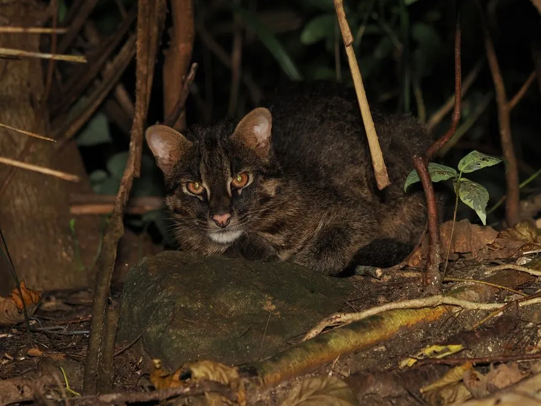

哺乳动物 · 动物界
豹猫 Prionailurus bengalensis

体型接近家猫的亚洲野猫，身上布满铜钱状斑点，分布广泛且善游泳，是农田与林缘常见的小型猫科。
- 分类
- 门脊索动物门纲哺乳纲目食肉目科猫科属豹猫属
- 栖息环境
- 森林、灌丛、草原、农田与村落边缘，适应多种环境
- 地理分布
- 东亚、南亚和东南亚，中国大部分省区有分布
- 保护级别
- IUCN 无危（LC）；中国国家二级保护动物
物种志
豹猫体长 0.36–0.66 米，尾长 0.2–0.3 米，体重 1.5–5 kg，体形与家猫相近，四肢修长。它的被毛为黄褐或灰褐色，全身布满深褐色斑点，背部斑点常连成纵纹，从眼角到耳后有两条白色条纹；尾巴上有环纹，尾尖黑色。
豹猫分布于东亚、南亚和东南亚，从俄罗斯远东、中国、印度到印度尼西亚都有记录，栖息于森林、灌丛、草原、农田和村落附近，适应性很强。它以鼠类为主食，也捕食鸟类、蛙、蜥蜴、鱼类和昆虫，善攀爬和游泳，能进入水中捕鱼。豹猫多在夜间单独活动，领域以气味标记；雌兽妊娠期约 60–70 天，每胎 2–4 仔。由于毛皮贸易和栖息地变化，部分地区数量下降，中国将其列为国家二级保护动物。
形态与习性
- 食性鼠类为主，也吃鸟类、蛙、蜥蜴、鱼和昆虫
- 体长0.36–0.66 m，尾长 0.2–0.3 m
- 体重1.5–5 kg
- 寿命野外约 8–12 年
- 繁殖妊娠期约 60–70 天，每胎 2–4 仔
- 活动节律多在夜间单独活动
- 本领善攀爬、善游泳，能下水捕鱼
趣味知识
- 豹猫身上的斑点形似铜钱，因此也被称为“钱猫”。
- 它会游泳并下水捕鱼，这在小型猫科中并不多见。
- 豹猫适应力很强，农田、林缘甚至村落附近都能见到。
- 中国是豹猫分布较广的国家之一，多数省区都有记录。